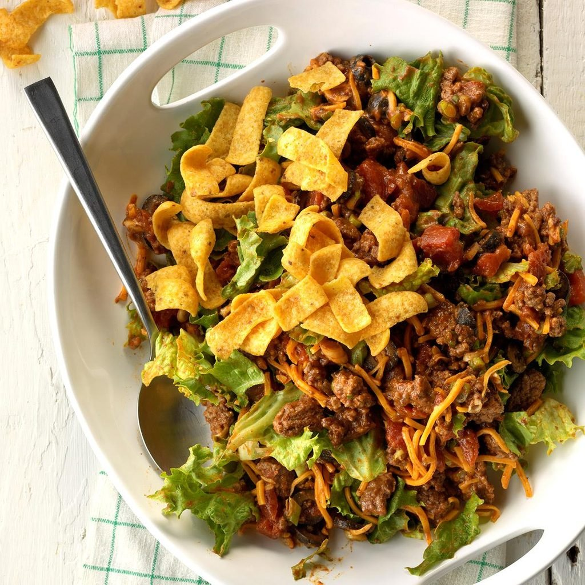

Taco Recipe

Description
Taco is a traditional Mexican dish consisting of a small
hand-sized corn- or wheat-based tortilla topped with a filling.
This version tweaked the original recipe by adding salad and beef filling
to fit my taste buds.
Ingredients
- 1 pound lean ground beef
- 1 (1.25 ounce) package taco seasoning mix
- 1 head iceberg lettuce - rinsed, dried, and shredded
- 1 onion, chopped
- 1 green bell pepper, chopped
- 3 cups shredded Cheddar-Monterey Jack cheese blend
- 2 tomatoes, chopped
- 4 ounces crushed tortilla chips
- ¼ cup French dressing, or as needed
Steps
-
Place ground beef in a large, deep skillet. Cook and stir over
medium-high heat until evenly brown. Drain and discard grease. Add taco
seasoning mix and prepare according to package directions. Set aside to
cool.
-
Combine cooled beef mixture, lettuce, onion, bell pepper, cheese,
tomatoes, and tortilla chips in a large serving bowl. Add enough
dressing to coat; mix well and refrigerate for 8 hours to overnight.
Back to Homepage